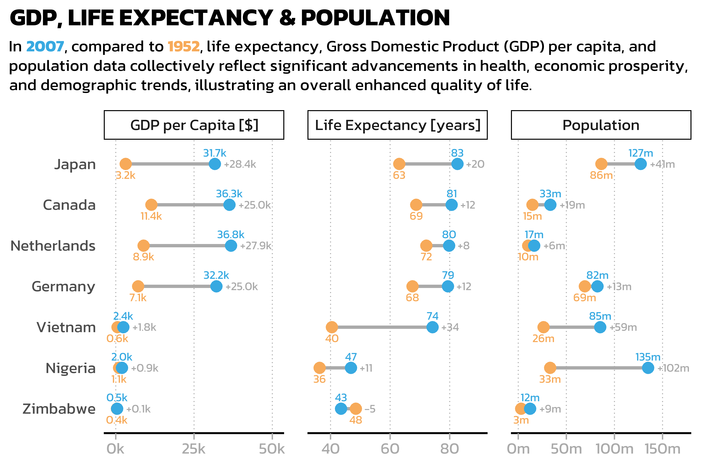

install.packages("camcorder")
# install.packages("cowplot")
install.packages("gapminder")
install.packages("ggh4x")
# install.packages("ggrepel")
install.packages("ggtext")
install.packages("scales")
install.packages("showtext")
install.packages("tidyverse")
# install.packages("viridis")Tutorial: Advanced data visualization in R
70th Biometrical Colloquium 2024 in Luebeck
This is the supporting material for the tutorial Advanced data visualization in R which is part of the 70th Biometrical Colloquium 2024 in Luebeck and takes place 28.02.2024 09:00-12:00. Here is the tutorial description as displayed on the website’s conference program:
Advanced data visualization in R: (Re)producing professional plots with ggplot2 and the tidyverse
Lecturer: Paul Schmidt (BioMath GmbH, Hamburg)
Learning objectives:
- Deep dive into ggplot2: Understand the intricacies of ggplot2 for top-tier data visualization
- Data manipulation with tidyverse: Utilize packages like dplyr, tidyr, and forcats to shape data optimally for creating graphs
- Aesthetic fine-tuning: Master the skills of axis formatting, theme detailing, and color selection
- Reproducing Exercise: Recreate published plots to understand the application of ggplot2 techniques in real-world scenarios
- Exporting excellence: Learn best practices for exporting plots in publication-ready formats
Target group:
- Anyone wanting to produce or present high-quality plots. Conveying complex data insights through refined visualizations is a relevant part of statistical analysis
Prerequisites:
- Basic understanding of R programming is required
- Basic knowledge of ggplot2 and the tidyverse is beneficial, but not required
- R-packages: tidyverse, cowplot, ggrepel, ggtext, viridis
Format: Hybrid
Part 0: Setup
Notice that we expect participants with different levels of experience in this tutorial. Furthermore, the tutorial duration is only 3 hours and thus quite short. As a consequence, this material often links to other resources with more detailed information instead of blowing up the content of this material. However, where possible, these links don’t simply lead to official online documentation etc. which may be hard to grasp for beginners, but instead to other workshop content created by this tutorial’s main lecturer.
The decision on which plots to create in this workshop was inspired by this blog post by Albert Rapp whose R and data visualization content is worth checking out!
You will need to install and load the following packages
library(camcorder)
# library(cowplot)
library(gapminder)
library(ggh4x)
# library(ggrepel)
library(ggtext)
library(scales)
library(showtext)
library(tidyverse)
# library(viridis)
showtext::showtext_opts(dpi = 300)Part 1: Export
This might be a bit unexpected, but I would argue that the very first thing we should talk about is exporting your ggplots. A major reason for this is the fact that by default you would create your ggplots by looking at them in the “Plots” preview window in RStudio. While this is not a problem per se, it becomes problematic once you realize the scale/size of your ggplot automatically adjusts to the size of your preview window. This is especially annoying regarding font sizes. Try it out: Create the following ggplot and then play around with width and height of your “Plots” panel in RStudio:
myplot <- ggplot(data = mtcars) +
aes(y = mpg, x = hp) +
geom_point()You may get results like this:
myplot
myplot
As far as I know, there are two ways of properly dealing with this.
Export and open file
To avoid the issue, you may simply never look at the preview of your ggplot in RStudio and instead always export your plot to then look at the exported file. Exporting a ggplot is flexible and convenient. You can choose a device function (e.g. png) or “eps”, “ps”, “tex” (pictex), “pdf”, “jpeg”, “tiff”, “png”, “bmp”, “svg” or “wmf” (windows only). Furthermore, you can set width and height in a unit of your choice and depending on your file type even choose the dpi and more.
ggsave(
filename = "myfile.png",
plot = myplot,
width = 6,
height = 4,
units = "in",
dpi = 300
) You don’t even need to manually open the file after creating it if you instead run this:
system('open "myfile.png"')Use {camcorder}
There is a package called {camcorder} which advertises its “eventual goal of creating a GIF showing all the plots saved sequentially during the design process” like in these examples. However, I am not the only one using camcorder for its feature of fixing the canvas size. In other words: It shows your ggplot in the RStudio panel fixed to your chosen scale. Thus, simply run something like this at the beginning of your session so that all ggplots shown afterwards are exactly 6x4 inches wide with dpi 300:
camcorder::gg_record(
device = "png",
width = 6,
height = 4,
units = "in",
dpi = 300
)Note that it actually does not show up in RStudio’s “Plots” but in its “Viewer” panel. Furthermore, note that it actually saves the intermediate plots somewhere, but defaults to a temporary directory for that.
Part 2: A single plot
Let us first create a single plot to compare the life expectancy between 1952 and 2007 for seven countries, respectively.
data prep
The data is courtesy of the Gapminder foundation and can easily be accessed via the {gapminder} package. We can then make use of the pipe operator %>% to create a subset of the data via the filter() function. Then, in order for our ggplot to work as intended in the next step, we also need to format the year column as a factor instead of an integer value via mutate(). Both functions are from the {dplyr} package which we loaded as part of the {tidyverse}. Finally, we use droplevels() to get rid of the factor levels that are now no longer present in the data (i.e. the countries we did not filter for).
dat <- gapminder::gapminder %>%
filter(year == 1952 | year == 2007) %>%
filter(country %in% c("Canada", "Germany", "Japan", "Netherlands", "Nigeria", "Vietnam", "Zimbabwe")) %>%
mutate(year = as.factor(year)) %>%
droplevels()
dat
#> # A tibble: 14 × 6
#> country continent year lifeExp pop gdpPercap
#> <fct> <fct> <fct> <dbl> <int> <dbl>
#> 1 Canada Americas 1952 68.8 14785584 11367.
#> 2 Canada Americas 2007 80.7 33390141 36319.
#> 3 Germany Europe 1952 67.5 69145952 7144.
#> 4 Germany Europe 2007 79.4 82400996 32170.
#> 5 Japan Asia 1952 63.0 86459025 3217.
#> 6 Japan Asia 2007 82.6 127467972 31656.
#> 7 Netherlands Europe 1952 72.1 10381988 8942.
#> 8 Netherlands Europe 2007 79.8 16570613 36798.
#> 9 Nigeria Africa 1952 36.3 33119096 1077.
#> 10 Nigeria Africa 2007 46.9 135031164 2014.
#> 11 Vietnam Asia 1952 40.4 26246839 605.
#> 12 Vietnam Asia 2007 74.2 85262356 2442.
#> 13 Zimbabwe Africa 1952 48.5 3080907 407.
#> 14 Zimbabwe Africa 2007 43.5 12311143 470.base plot
One typical way you may find data like this visualized is via a grouped bar plot. The minimum amount of code to create such a plot via ggplot is this:
ggplot(data = dat) +
aes(x = lifeExp, y = country, fill = year) +
geom_col(position = position_dodge())Read this if you are not familiar with the general ggplot syntax. We need to add position = position_dodge() to geom_col(), since the default is to stack the multiple bars (for the different years) on top of each other (as seen in the Nature example plot below).
(factor) level reordering
It may seem irritating that countries are sorted alphabetically starting at the bottom. Moreover, 1952 is below 2007 in the plot (but not in the legend!). This is because these two columns are formatted as factors in our data and by default factor levels are sorted alphabetically.
Note that ggplot applies this factor level order, but does it so from bottom to top.
levels(dat$country)
#> [1] "Canada" "Germany" "Japan" "Netherlands" "Nigeria"
#> [6] "Vietnam" "Zimbabwe"A useful package for dealing with factors in R is {forcats} whose functions all start with fct_*. One way of dealing with this is changing the factor level order in the data before passing it to ggplot. Here, we may simply reverse the order via fct_rev().
dat <- dat %>%
mutate(across(c(country), ~ fct_rev(.x)))levels(dat$country)
#> [1] "Zimbabwe" "Vietnam" "Nigeria" "Netherlands" "Japan"
#> [6] "Germany" "Canada"ggplot(data = dat) +
aes(x = lifeExp, y = country, fill = year) +
geom_col(position = position_dodge())
Alternative 1
# alternatively, you may apply fct_rev() inside aes() instead of altering the data beforehand
ggplot(data = dat) +
aes(x = lifeExp, y = fct_rev(country), fill = year) +
geom_col(position = position_dodge())Alternative 2
# alternatively, you may manually provide the levels in the desired order within scale_y_discrete()
ggplot(data = dat) +
aes(x = lifeExp, y = country, fill = year) +
geom_col(position = position_dodge()) +
scale_y_discrete(limits = c("Zimbabwe", "Vietnam", "Nigeria", "Netherlands", "Japan", "Germany", "Canada"))However, it probably makes more sense to sort the countries according to the data. Here, we could sort them according to their life expectancy in 2007.
sorted_countries <- dat %>%
filter(year == "2007") %>%
arrange(lifeExp) %>%
pull(country) %>%
as.character()
dat <- dat %>%
mutate(country = fct_relevel(country, sorted_countries))
ggplot(data = dat) +
aes(x = lifeExp, y = country, fill = year) +
geom_col(position = position_dodge())
Next, we address the order of years in the plot and the legend. As you can see in the previous plots, once more the first factor level (1952) is on the bottom, while the second level (2007) is on top. Thus, we could use one of the approaches shown for country to change that. More precisely, let’s take the approach of Alternative 1 and use fct_rev() inside the aes().
Note however, that while this changes the order of the years in the plot, it does not affect their order in the legend. To address that, we can use the limits = argument in scale_fill_manual() (which corresponds to Alternative 2 above):
ggplot(data = dat) +
aes(x = lifeExp, y = country, fill = fct_rev(year)) +
geom_col(position = position_dodge()) +
scale_fill_discrete(limits = c("1952", "2007"))
Alternative
# alternatively, you may reverse the legend order via guides()
ggplot(data = dat) +
aes(x = lifeExp, y = country, fill = fct_rev(year)) +
geom_col(position = position_dodge()) +
guides(fill = guide_legend(reverse = TRUE))reproducing a theme
Now that we’ve got the basics correct, the next thing I would want to change is things like the theme, i.e. the non-data components of the plot: titles, labels, fonts, background, gridlines, and legends.
Using theme() allows us to format our plot in any way we want. Instead of picking things based on what feels good, let us here try to recreate the layout of a plot published in Nature in ‘150 years of Nature: a data graphic charts our evolution’ by Richard Monastersky & Richard Van Noorden (2019). URL to the plot.

Thus, a better starting point would be to use the complete theme theme_minimal() instead of the default theme_gray(). From here, we can further adjust things via theme().
Furthermore, let’s also pick two of the colors used in that image (e.g. via any online color picker) for our years. We can create a named vector year_colors and when changing scale_fill_discrete() to scale_fill_manual() supply it via the values = argument.
Finally, as our ggplot-code is getting longer, let’s start saving out current plot into an object p and reuse it.
year_colors <- c("1952" = "#F7AA59", "2007" = "#37A9E1")
p <- ggplot(data = dat) +
aes(x = lifeExp, y = country, fill = fct_rev(year)) +
geom_col(position = position_dodge()) +
scale_fill_manual(
name = "Year",
limits = names(year_colors),
values = year_colors) +
theme_minimal(base_size = 12)
p
font
To further replicate the aesthetics of the Nature plot, we introduce a custom font named Kanit. This font, available through Google Fonts, has been chosen for its stylistic resemblance to the one used in the Nature publication.
The process begins by fetching the font from Google Fonts and making it available for use in our R session via sysfonts::font_add_google("Kanit", "kanit"). Next, showtext::showtext_auto() activates the use of custom fonts in plots. It’s important to also run showtext::showtext_opts(dpi = 300) to avoid getting unexpected results. This is because {showtext} uses a default of 72 dpi, while e.g. exporting plots via ggsave() defaults to dpi = 300. Furthermore, you may also want the dpi to be 300 (or some other number) when rendering plots within your RMarkdown via knitr::opts_chunk$set(dpi = 300) or quarto document via fig-dpi: 300.
We add a title and subtitle via labs() and then apply the font to all text elements via text = element_text(family = "kanit"). For some reason, the default position of title and subtitle in a ggplot is left-aligned with the y-axis - to instead left-align it with the left side of the entire plot, we apply plot.title.position = "plot". Making the title a bit bigger and bold is straightforward. However, having a subtitle (or other text elements) that has automatic line breaks when the string is too long actually requires {ggtext} and more specifically a ggtext::element_textbox_simple() instead of the default ggplot2::element_text().
sysfonts::font_add_google("Kanit", "kanit")
showtext::showtext_auto()
# We already did this above, but dont forget about it:
# showtext::showtext_opts(dpi = 300)
long_subtitle <- "In the mid-twentieth century, global life expectancy was shaped by post-war recovery, with variations across countries. As decades progressed, public health advances and socioeconomic growth painted a new picture of longevity. The data now reflect a world where life expectancy in 2007 often mirrors an improved quality of life compared to 1952."
p <- p +
labs(
title = "LIFE EXPECTANCY",
subtitle = long_subtitle
) +
theme(text = element_text(family = "kanit")) +
theme(
plot.title.position = "plot",
plot.title = element_text(size = 15, face = "bold"),
plot.subtitle = ggtext::element_textbox_simple(size = 10, margin = margin(0, 0, 5, 0))
)
paxes
For our specific goal, we start by removing the axis titles as well as unnecessary space beyond the limits of each axis. Furthermore, there should be no axis line for the y-axis and a relatively thick black line with grey ticks for the x-axis. More details on axis formatting can be found here.
p <- p +
scale_y_discrete(
name = NULL, # remove title
expand = c(0,0) # no extra space above or below
) +
scale_x_continuous(
name = NULL, # remove title
expand = expansion(mult = c(0, 0.05)) # only 5% extra space above upper limit
) +
theme(
axis.line.y = element_blank(), # remove line on y-axis
axis.text.x = element_text(color = "#AAAAAA"), # x-axis label color
axis.ticks.x = element_line(color = "#AAAAAA", linewidth = 0.4), # x-axis tick color & width
axis.ticks.length.x = unit(4, "pt"), # x-axis tick length
axis.line.x = element_line(color = "black", linewidth = 0.6) # x-axis line color & width
)
p
legend
Our legend is supposed to be above the plot and left-aligned. We partly achieve this via legend.position, legend.box.just and legend.justification, but unfortunately this does not fully achieve the goal. We want to have a legend that is left-aligned with respect to the entire plot, not to the y-axis. As far as I know and unlike plot.title.position = "plot" which we used above, there is no way of achieving this normally. Thus, we here use a hack by setting the left margin() of the legend to a negative value that looks good enough.
Besides the position, the legend title is made bold via legend.title = element_text(face = "bold") and we force all elements of the legend to be in one row via guide_legend(title.position = "left", nrow = 1). Finally, the size of the colored squares in the legend is reduced via legend.key.size = unit(0.4, "cm").
p <- p +
guides(
fill = guide_legend(
title.position = "left",
nrow = 1)
) +
theme(
legend.position = "top",
legend.box.just = "left",
legend.justification = "left",
legend.margin = margin(0, 0, 0, -57, unit = "pt"),
legend.title = element_text(face = "bold"),
legend.key.size = unit(0.4, "cm")
)
p
grid lines
Lastly, we could adjust the grid lines. By default, ggplot has major and minor grid lines for both axes. Yet, we only want thin, dotted, grey lines for the major grid of the x-axis:
p <- p +
theme(
panel.grid.minor = element_blank(),
panel.grid.major.y = element_blank(),
panel.grid.major.x = element_line(linetype = "dotted", color = "#AAAAAA", linewidth = 0.3)
)
p
improve the plot
We have now mostly reproduced the layout of the Nature plot and applied it to our plot. At this point, we could try out things that may improve the plot.
labels
In certain cases it can be beneficial to additionally label data points. In this plot, we may simply label each bar with rounded life expectancy it represents. We here do so via geom_text() where aes(label = round(lifeExp)). Note that we also need to add group = fct_rev(year) here. This is because so far we applied fill = fct_rev(year) in the general aes() which led to different groups due to the different fill colors so that geom_col(position = position_dodge()) knew which groups/bars were supposed to be dodged. However, our labels created via geom_text() do not have a fill attribute but should still be dodged per year in the same way. Hence, group = fct_rev(year) is required and moreover, position_dodge(width = 0.9) actually needs a width value here set to the default dodge width for bars.
Once this is out the way, we make the text white and right-align it with extra space via a value for hjust that is larger than 1. Finally, don’t forget to apply family = "kanit" here as well, as geoms are not part of the theme() and thus this geom_text() knows nothing about Kanit.
p <- p +
geom_text(
mapping = aes(label = round(lifeExp), group = fct_rev(year)),
position = position_dodge(width = 0.9),
hjust = 1.1,
color = "white",
family = "kanit"
)
p
remove legend
This comes down to personal preferences, but we could remove the legend entirely by instead coloring the subtitle in a way that clarifies what the colors stand for. Here this means that 1952 should be orange and 2007 blue. This is once more made possible via {ggtext} as it allows to use HTML rendering for text in ggplot. This means e.g. that that writing A <b style='color:red;'> red </b> word results in “A red word”. Let us therefore rewrite the subtitle accordingly:
new_long_subtitle <- "In the mid-twentieth century, global life expectancy was shaped by post-war recovery, with variations across countries. As decades progressed, public health advances and socioeconomic growth painted a new picture of longevity. The data now reflect a world where life expectancy in <b style='color:#37A9E1;'>2007</b> often mirrors an improved quality of life compared to <b style='color:#F7AA59;'>1952</b>."
p <- p +
labs(
title = "LIFE EXPECTANCY",
subtitle = new_long_subtitle
) +
guides(fill = "none")
# Be aware that we don't need to this here because we already
# did so earlier to have automatic line breaks, but without
# formatting the subtitle as a ggtext element, it would
# not understand the html commnand:
# theme(plot.subtitle = ggtext::element_textbox_simple())
p
dumbbell plot
When it comes to visualizing changes or differences between two data points (like life expectancy across two different years in our case), dumbbell plots can offer a clearer and more direct comparison than grouped bar plots. While grouped bar plots efficiently display the individual values, dumbbell plots excel in highlighting the actual change or difference between these values. They connect the two data points with a line, making it visually immediate to see the extent of change. This is particularly beneficial in cases where the focus of the analysis is on the change itself rather than the absolute values. Moreover, dumbbell plots reduce clutter and can be easier to read when dealing with a large number of categories. By using different colors for the points and a subtle line to connect them, dumbbell plots provide a balanced emphasis on both the individual data points and their relative change, thereby offering a more nuanced view of the data. This makes them an excellent choice for our comparison of life expectancies over time.
To create such a dumbbell plot, we need a transformed, wide version of our data (more on long/wide format here):
dat_lifeExp_wide <- dat %>%
select(country, year, lifeExp) %>%
pivot_wider(names_from = year, values_from = lifeExp, names_prefix = 'year_')
dat_lifeExp_wide
#> # A tibble: 7 × 3
#> country year_1952 year_2007
#> <fct> <dbl> <dbl>
#> 1 Canada 68.8 80.7
#> 2 Germany 67.5 79.4
#> 3 Japan 63.0 82.6
#> 4 Netherlands 72.1 79.8
#> 5 Nigeria 36.3 46.9
#> 6 Vietnam 40.4 74.2
#> 7 Zimbabwe 48.5 43.5Furthermore, we need most of what we did so far again with our ggplot object p again, but we do need to make some changes, which is why it makes sense to recreate p2 from scratch. All the theme elements will stay the same for now, so let’s wrap them in our own custom theme:
theme_nature <- function(base_size = 12) {
theme_minimal(base_size = base_size) +
theme(
text = element_text(family = "kanit"),
plot.title.position = "plot",
plot.title = element_text(size = 15, face = "bold"),
plot.subtitle = ggtext::element_textbox_simple(size = 10, margin = margin(0, 0, 10, 0)),
axis.line.y = element_blank(),
axis.text.x = element_text(color = "#AAAAAA"),
axis.ticks.x = element_line(color = "#AAAAAA", linewidth = 0.4),
axis.ticks.length.x = unit(4, "pt"),
axis.line.x = element_line(color = "black", linewidth = 0.6),
legend.position = "top",
legend.box.just = "left",
legend.justification = "left",
legend.margin = margin(0, 0, 0,-57, unit = "pt"),
legend.title = element_text(face = "bold"),
legend.key.size = unit(0.4, "cm"),
panel.grid.minor = element_blank(),
panel.grid.major.y = element_blank(),
panel.grid.major.x = element_line(
linetype = "dotted",
color = "#AAAAAA",
linewidth = 0.3
)
)
}Thus, when using our newly created theme_nature(), we can focus on the changes in the other parts of our ggplot we made even before adding any new geoms:
- in the general
aes()we usecolor = fct_rev(year)instead offill = fct_rev(year) - accordingly, we also use
scale_color_manual()instead ofscale_fill_manual() - Above, we turned off the legend in a later step via
guides(fill = "none"). This time, we immediately setguide = "none"withinscale_color_manual(). - we actually do want extra space beyond the limits for both axes so we remove the
expand =statements - we no longer need bars created via
geom_col() - we no longer the labels created via
geom_text()
Given this, we have a well-prepared ggplot in need of geoms:
p2_base <- ggplot(data = dat) +
aes(x = lifeExp, y = country, color = fct_rev(year)) +
scale_color_manual(
name = "Year",
limits = c("1952", "2007"),
values = year_colors,
guide = "none"
) +
scale_y_discrete(
name = NULL,
) +
scale_x_continuous(
name = NULL,
) +
labs(
title = "LIFE EXPECTANCY",
subtitle = new_long_subtitle
) +
theme_nature()
p2_base
We only need two geoms to create a dumbbell plot here: geom_segment() draws a straight line between points (x, y) and (xend, yend), which works nicely with the dat_lifeExp_wide created above. Note that the color = "#AAAAAA" overrides the color = fct_rev(year) from the general aes() that would otherwise apply. The points are automatically created and colored via geom_point() based on dat and the general aes().
p2 <- p2_base +
geom_segment(
data = dat_lifeExp_wide,
aes(x = year_1952, xend = year_2007, y = country, yend = country),
color = "#AAAAAA",
linewidth = 1
) +
geom_point(size = 3)
p2
labels again
Once again we can decide additionally have data points labeled with their values. We can easily add the rounded life expectancy above each point by basically using the same general aesthetics as geom_point() but vertically justifying a bit upwards.
Yet, even more informative is the actual difference between 2007 and 1952. For that, we can use dat_lifeExp_wide again where we already have one column per year and can subtract them into a new column diff. For easier readability we then format that result by first rounding it and then making it into a string diff_lab that always displays “+” or “-” in front of the respective number. I want to position this label on the right side of each dumbbell and could easily do so if the life expectancy were always higher for 2007 but this is not the case for Zimbabwe. Thus, I am also creating a helper column max_x which is simply the maximum life expectancy of the two years or in other words the right side of the dumbbell. We now have everything we need to use a second geom_text where we use dat = dat_lifeExp_wide instead of the dataset provided in ggplot(data = dat) and set the aesthetics as aes(x = max_x, label = diff_lab). So far, our labels would be on top of the point of the right side of the dumbbell. Thus, we add position = position_nudge(x = 1) to nudge the position for the label one year to the right and additionally use hjust = 0 so that the label is not centered but instead left-aligned to that nudged position.
dat_lifeExp_wide <- dat_lifeExp_wide %>%
mutate(
max_x = pmax(year_2007, year_1952),
diff = year_2007 - year_1952,
diff_lab = sprintf("%+d", round(diff))
)
p2 <- p2 +
geom_text(
mapping = aes(label = round(lifeExp)),
size = 2.5,
vjust = -1,
family = "kanit"
) +
geom_text(
data = dat_lifeExp_wide,
mapping = aes(x = max_x, label = diff_lab),
size = 2.5,
hjust = 0,
position = position_nudge(x = 1),
color = "#AAAAAA",
family = "kanit"
)
p2
Part 3: Multiple plots
Let us take a step back and look at our data again to realize that we also have information about population and GDP per capita for each country in each year:
dat
#> # A tibble: 14 × 6
#> country continent year lifeExp pop gdpPercap
#> <fct> <fct> <fct> <dbl> <int> <dbl>
#> 1 Canada Americas 1952 68.8 14785584 11367.
#> 2 Canada Americas 2007 80.7 33390141 36319.
#> 3 Germany Europe 1952 67.5 69145952 7144.
#> 4 Germany Europe 2007 79.4 82400996 32170.
#> 5 Japan Asia 1952 63.0 86459025 3217.
#> 6 Japan Asia 2007 82.6 127467972 31656.
#> 7 Netherlands Europe 1952 72.1 10381988 8942.
#> 8 Netherlands Europe 2007 79.8 16570613 36798.
#> 9 Nigeria Africa 1952 36.3 33119096 1077.
#> 10 Nigeria Africa 2007 46.9 135031164 2014.
#> 11 Vietnam Asia 1952 40.4 26246839 605.
#> 12 Vietnam Asia 2007 74.2 85262356 2442.
#> 13 Zimbabwe Africa 1952 48.5 3080907 407.
#> 14 Zimbabwe Africa 2007 43.5 12311143 470.Thus, we could simply create the same ggplot three times: once for each variable. While this is certainly an option and call for packages such as {patchwork} or {cowplot}, we can also achieve our goal via facets within the same ggplot.
data prep
To do that, we need to restructure our data so that all values are in the same column:
dat_long <- dat %>%
pivot_longer(
cols = c(lifeExp, pop, gdpPercap),
names_to = "statistic",
values_to = "value"
)
dat_long
#> # A tibble: 42 × 5
#> country continent year statistic value
#> <fct> <fct> <fct> <chr> <dbl>
#> 1 Canada Americas 1952 lifeExp 68.8
#> 2 Canada Americas 1952 pop 14785584
#> 3 Canada Americas 1952 gdpPercap 11367.
#> 4 Canada Americas 2007 lifeExp 80.7
#> 5 Canada Americas 2007 pop 33390141
#> 6 Canada Americas 2007 gdpPercap 36319.
#> 7 Germany Europe 1952 lifeExp 67.5
#> 8 Germany Europe 1952 pop 69145952
#> 9 Germany Europe 1952 gdpPercap 7144.
#> 10 Germany Europe 2007 lifeExp 79.4
#> # ℹ 32 more rowsMoreover, we need a dat_all_wide instead of the dat_lifeExp_wide from above:
dat_all_wide <- dat_long %>%
pivot_wider(names_from = year, values_from = value, names_prefix = 'year_') %>%
mutate(
max_x = pmax(year_2007, year_1952),
diff = year_2007 - year_1952,
diff_lab = sprintf("%+d", round(diff))
)Finally, besides changing title and subtitle, the most important change is to add facet_wrap(facets = ~ statistic, scales = "free_x") so that we get one plot per value in the statistic column while their x-axes are allowed to have different scales:
facets
another_long_subtitle <- paste0("In <b style='color:", year_colors[["2007"]], ";'>2007</b>, compared to <b style='color:", year_colors[["1952"]],";'>1952</b>, life expectancy, Gross Domestic Product (GDP) per capita, and population data collectively reflect significant advancements in health, economic prosperity, and demographic trends, illustrating an overall enhanced quality of life.")
ggplot(data = dat_long) +
aes(x = value, y = country, color = fct_rev(year)) +
facet_wrap(facets = ~ statistic, scales = "free_x") +
scale_color_manual(
name = "Year",
limits = c("1952", "2007"),
values = year_colors,
guide = "none"
) +
labs(
title = "GDP, LIFE EXPECTANCY & POPULATION",
subtitle = another_long_subtitle
) +
scale_y_discrete(
name = NULL,
) +
scale_x_continuous(
name = NULL,
) +
theme_nature() +
geom_segment(
data = dat_all_wide,
aes(x = year_1952, xend = year_2007, y = country, yend = country),
color = "#AAAAAA",
linewidth = 1
) +
geom_point(size = 3) +
geom_text(
mapping = aes(label = round(value)),
size = 2.5,
vjust = -1,
family = "kanit"
) +
geom_text(
data = dat_all_wide,
mapping = aes(x = max_x, label = diff_lab),
size = 2.5,
hjust = 0,
position = position_nudge(x = 1),
color = "#AAAAAA",
family = "kanit"
)
individual labels
So technically this worked, but it obviously needs some tweaking. First, the facets should have nicer labels than just the variable names. Moreover, while it is helpful that the x-axes of the different facets were allowed to have different scales/limits, the vast difference between magnitude of the three variables leads to problematic labels for both the axes and inside the plot. As a result, simply rounding the numbers is still appropriate for life expectancy, but not for the other two. We therefore create a new column value_lab in which labels for each point are defined depending on what statistic it is. A convenient way to create such formatted numbers is the scales::number() function. Besides value_lab in dat_long, we also recreate diff_lab in dat_all_wide this way, additionally adding the +/-. Finally note that also the method of positioning the label on the right side of the dumbbell no longer works. One way of fixing it is also creating a new column x_pos_lab which adds a certain value to max_x depending on the statistic.
dat_long <- dat_long %>%
mutate(value_lab = case_when(
statistic == "lifeExp" ~ number(value, accuracy = 1),
statistic == "pop" ~ number(value, accuracy = 1, scale = 1/1000000, suffix = "m"),
statistic == "gdpPercap" ~ number(value, accuracy = 0.1, scale = 1/1000, suffix = "k")
))
dat_all_wide <- dat_all_wide %>%
mutate(
diff_lab = case_when(
statistic == "lifeExp" ~ number(
diff,
style_positive = "plus",
style_negative = "minus",
accuracy = 1
),
statistic == "pop" ~ number(
diff,
style_positive = "plus",
style_negative = "minus",
accuracy = 1,
scale = 1 / 1000000,
suffix = "m"
),
statistic == "gdpPercap" ~ number(
diff,
style_positive = "plus",
style_negative = "minus",
accuracy = 0.1,
scale = 1 / 1000,
suffix = "k"
)
),
x_pos_lab = case_when(
statistic == "lifeExp" ~ max_x + 3,
statistic == "pop" ~ max_x + 10000000,
statistic == "gdpPercap" ~ max_x + 3000
)
)We can then apply these new labels to our faceted ggplot. We also provide labels per facet via labeller = labeller(statistic = ...). Finally note that even though we shortened the labels, they will still overlap in some cases where the points are too close to each other. One solution is to have the 1952-label below and the 2007-label above the point which can be achived by moving the vjust inside the aes() and having it depend on the year via vjust = if_else(year == "1952", 2, -1):
facet_labels <- c(lifeExp = "Life Expectancy [years]", pop = "Population", gdpPercap = "GDP per Capita [$]")
p3 <- ggplot(data = dat_long) +
aes(x = value, y = country, color = fct_rev(year)) +
facet_wrap(
facets = ~ statistic,
scales = "free_x",
labeller = labeller(statistic = facet_labels)
) +
scale_color_manual(
name = "Year",
limits = c("1952", "2007"),
values = year_colors,
guide = "none"
) +
scale_y_discrete(
name = NULL,
) +
scale_x_continuous(
name = NULL,
) +
labs(
title = "GDP, LIFE EXPECTANCY & POPULATION",
subtitle = another_long_subtitle
) +
theme_nature() +
theme(
panel.spacing = unit(1, "lines"),
strip.background = element_rect(fill = NA, color = "black")
) +
geom_segment(
data = dat_all_wide,
aes(x = year_1952, xend = year_2007, y = country, yend = country),
color = "#AAAAAA",
linewidth = 1
) +
geom_point(size = 3) +
geom_text(
mapping = aes(label = value_lab, vjust = if_else(year == "1952", 2, -1)),
size = 2.5,
family = "kanit"
) +
geom_text(
data = dat_all_wide,
mapping = aes(x = x_pos_lab, label = diff_lab),
size = 2.5,
hjust = 0,
color = "#AAAAAA",
family = "kanit"
)
p3
individual scales
However, the axes are still not optimal for two reasons: The axis labels do not look good except for Life Expectancy and the labels inside the plots are sometimes cut off due to the axis limits. Adjusting axes per facet is actually not possible/straightforward via {ggplot2} so we need load {ggh4x} to make use of facetted_pos_scales. Note that we can use labels = scales::number_format() in basically the same way as we used scales::number() above. Moreover, we choose good combinations of limits and expand to make sure no labels are cut off and finally pick breaks via the convenient scales::breaks_width() function:
p3 <- p3 + facetted_pos_scales(
x = list(
statistic == "lifeExp" ~ scale_x_continuous(
limits = c(35, 90),
breaks = breaks_width(20),
labels = number_format(accuracy = 1)
),
statistic == "pop" ~ scale_x_continuous(
limits = c(0, 150000000),
expand = expansion(mult = c(0.05, 0.2)),
breaks = breaks_width(50000000),
labels = number_format(
accuracy = 1,
scale = 1 / 1000000,
suffix = "m"
)
),
statistic == "gdpPercap" ~ scale_x_continuous(
limits = c(0, 50000),
expand = expansion(mult = c(0.075, 0.075)),
breaks = breaks_width(25000),
labels = number_format(
accuracy = 1,
scale = 1 / 1000,
suffix = "k"
)
)
)
) + xlab(NULL) # apparently necessary?!
p3
TODO
- After first plot: Talk about exporting and then about looking at your plot not in the RStudio preview window. Maybe even introduce {camcorder}
- Choosing colors / use viridis colors instead
- Have full code to get final each plot in a single folded chunk
- Packages in tutorial description but not in tutorial yet: cowplot, ggrepel, viridis
- BioMath Logo/Link on Website
- BioMath in Citation
70BiomColl_AdvDataVisR - Tutorial: Advanced data visualization in R 70BiomColl_AdvDataVisR - Tutorial: Advanced data visualization in R 70BiomColl_AdvDataVisR - Tutorial: Advanced data visualization in R 70BiomColl_AdvDataVisR 70th Biometrical Colloquium 2024 in Luebeck 70th Biometrical Colloquium 2024 in Luebeck